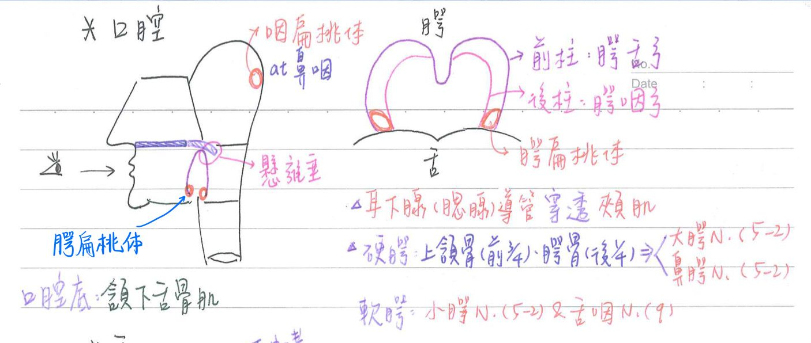
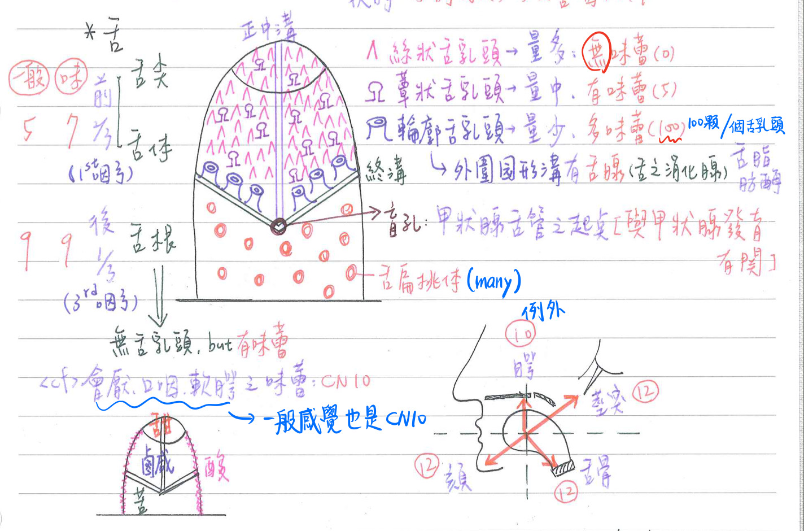
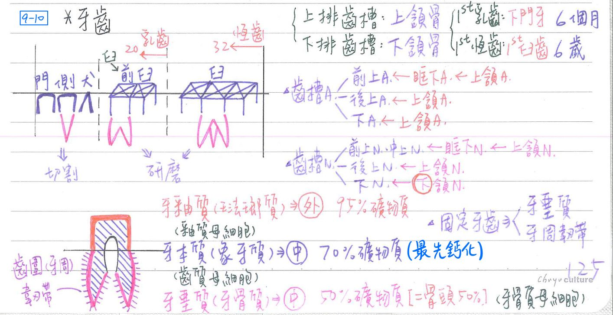
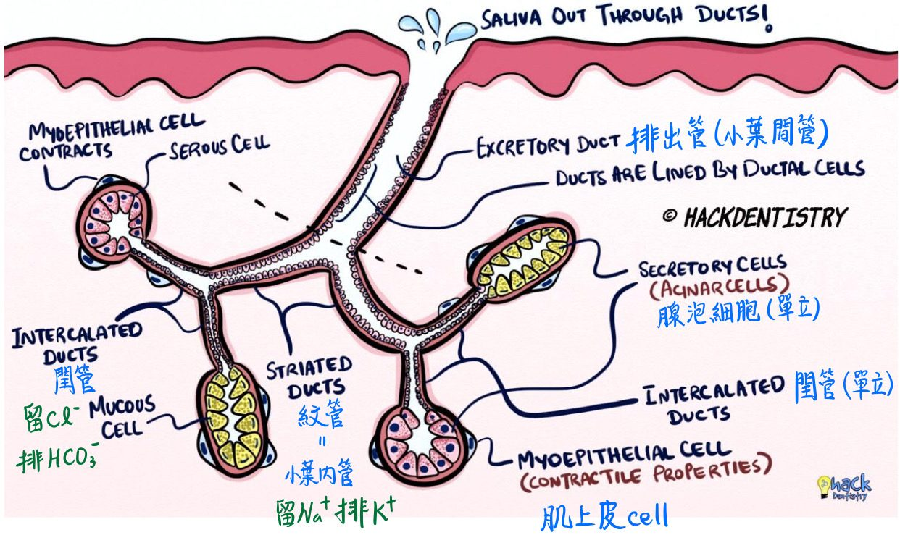
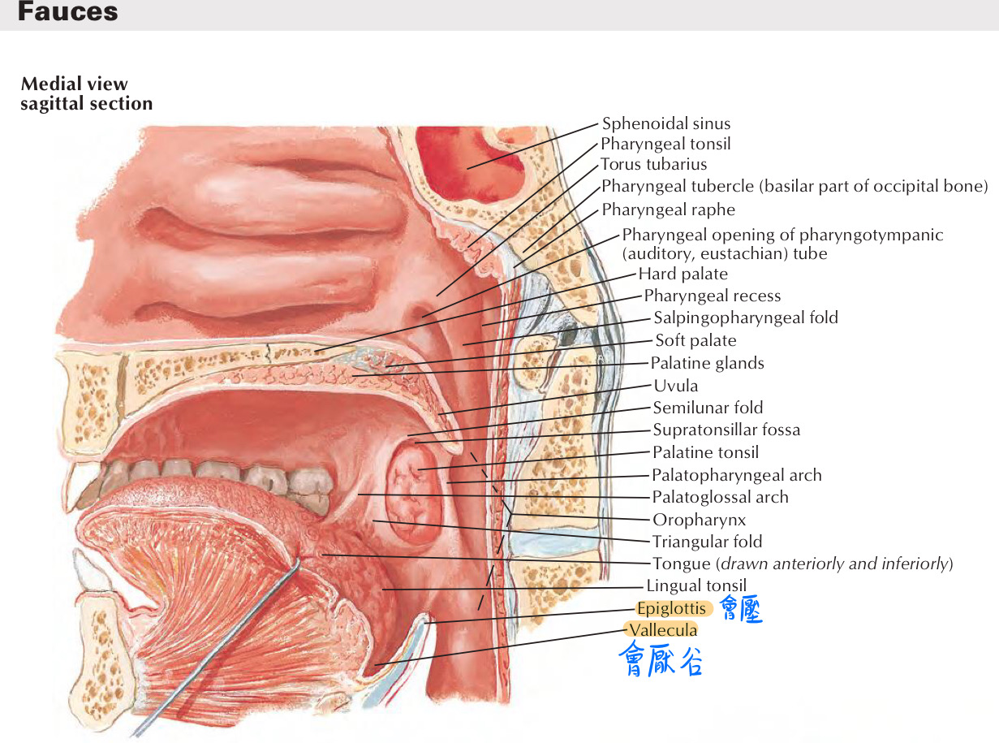
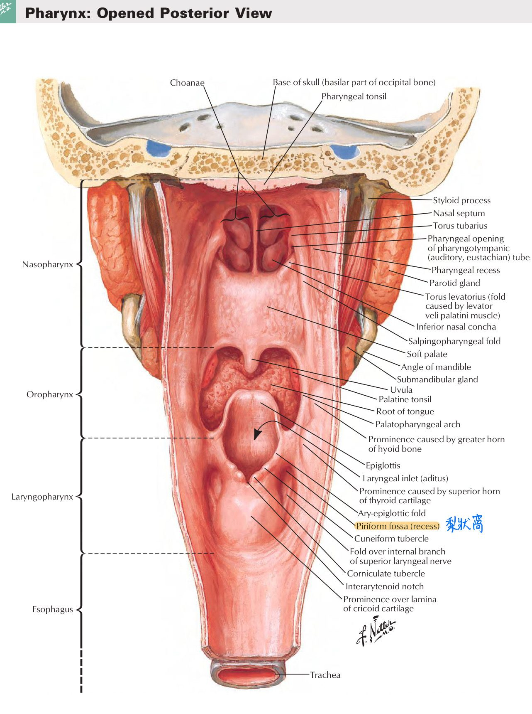

👄 消化系統-口腔、唾液腺
口腔(oral cavity)
口腔-邊界
- 前：口裂(oral fissure)=嘴唇(lip)
- 後：口咽峽(oropharyngeal isthmus)= 咽門(fauces)
- 咽門：為口腔與口咽之分界
- 具腭舌弓(palatoglossal arch；前柱)&腭咽弓(palatopharyngeal arch；後柱)
- 其間具腭扁桃腺(palatine tonsils)
- 咽門：為口腔與口咽之分界
- 側：頰肌(buccinator)
- 耳下腺(腮腺；parotidgland)的導管穿透頰肌
- 頂：腭(palatine)→口腔&鼻腔之交界
- 硬腭：上頷骨(前3/4)、腭骨(後1/4)
- 神經支配：大腭N(CN5-2分支)、鼻腭N(CN5-2分支)
- 軟腭：後下垂構造稱為懸雍垂(uvula)
- 神經支配：小腭N(CN5-2分支)、舌咽N(CN9)支配
- 硬腭：上頷骨(前3/4)、腭骨(後1/4)
- 底：頷下舌骨肌(mylohyoid)+[頦舌骨肌(geniohyoid)]
備註
有些textbook不認為底有包含頦舌骨肌(因為其在頷下舌骨肌上方)
口腔-隔間
- 前庭(vestibule)：牙齦(gingiva, gum)前方之空間
- 主腔(proper cavity)：牙齦後方之空間

口腔-口腔黏膜(mucosa)
- =★複層鱗狀上皮+固有層；司保護、分泌、感覺
- 除舌上表面(舌背)、牙齦外，均具黏膜下層(submucosa)
- 咀嚼性黏膜(masticatory mucosa)：具角化上皮；位於牙齦、硬腭
- 角化上皮細胞：具均勻獨立且散佈於細胞質中之張力絲(tonofilamen)
→可合成角質透明顆粒(keratihyalin granule)
- 角化上皮細胞：具均勻獨立且散佈於細胞質中之張力絲(tonofilamen)
- 內襯性黏膜(liningmucosa)：具非角質化上皮
- 位於：嘴唇、口頰、口腔底、舌下表面、軟腭
- 特化性黏膜(specialized mcosa)：具舌乳頭、味蕾；位於舌上表面(舌背)
舌(tongue)
舌-構造
- 舌背：舌上方，無黏膜下層；舌頭表面為★複層鱗狀上皮
- 前方2/3為舌尖及舌體：源自1st咽弓；位於口腔；主含舌乳頭
- 前2/3再以正中溝(median sulcus)分成左、右兩半
- 後方1/3為舌根：源自3rd咽弓；位於口咽；主含舌扁桃腺
- 終溝(terminal sulcus)：舌體與舌根交界
- 盲孔(foramen cecum)：正中溝與終溝交界
- 為甲狀腺舌管(thyroglossal duct)起點，與甲狀腺發育有關
- 前方2/3為舌尖及舌體：源自1st咽弓；位於口腔；主含舌乳頭
- 舌底：舌下方
舌繁帶(frenulum of tongue)
- 位於舌底正中線；防舌向後下方墜
- 若舌繫帶太短→妨礙語言之發音
舌乳頭(lingual papillae)：舌表面突起
| 名稱 | 位置 | 數目 | 大小 | 特色 | 味蕾 |
|---|---|---|---|---|---|
| 絲狀舌乳頭(filiform) | 舌背前2/3 | ★最多 | 最小 | 舌苔(角化) | ★無 |
| 蕈狀舌乳頭(fungiform) | 舌背前2/3 | 中 | 中 | 紅點 | 有(5) |
| 輪廓舌乳頭(circumvallate) | 沿終溝前緣 | 最少 | 最大 | V字形排列 | 最多(100) |
| 葉狀舌乳頭(foliate) →人類的已退化 | 舌背後外緣 | 中 | 中 | 平行分佈 | 有 |
- 舌乳頭發育：輪廓/葉狀(第8週)→蕈狀→絲狀(第10週)
感覺[位置有點不一樣，不要背錯~]
| 位置 | 味覺 | 位置 | 一般(觸、壓、溫痛) |
|---|---|---|---|
| 舌前2/3 | CN7(鼓索枝) | 舌前2/3 | CN5-3 |
| 舌後1/3 | CN9 | 舌後1/3、軟腭、口咽 | ★★CN9 ※軟顎：CN5-2(小顎N)&CN9 |
| 會厭、口咽、軟腭 | CN10 | 會厭、喉咽 | CN10 |
- 傳導味覺之腦神經：CN7, 9, 10
- 舌N：含支配舌前2/3之一般感覺&味覺之神經纖維

味蕾(tastebuds)：味覺接受器；不一定在舌乳頭上
- ★為舌頭上皮特化而來的感覺器官
- 酸(sourness)：舌緣
- 甜(sweetness)：舌尖
- 苦(bitterness)：舌根
- 鹹(saltiness)：舌背(廣泛分佈)
- 鮮(umani)
- 家族性自主神經失調(familial dysautonomia)：先天性不具味蕾&★蕈狀舌乳頭(輪廓狀舌乳頭缺乏也可能與此病有關)
舌腺(von Ebner gland)
- 開口於輪廓舌乳頭之外圍圓形溝
- 分泌漿液(serous)、★[110-2]舌脂肪晦(lingual lipase)
運動(舌內、外在肌)
牙齒(teeth)
牙齒-外觀
- 牙冠(crown)：顯露於牙齦上方
- 牙頸(neck)：牙冠與牙根交界
- 牙根(root)：齒槽內
- 上排齒槽由上頷骨形成；下排齒槽由下頷骨形成
牙列(dentation)及牙根突起數：成人共32顆牙
- 門牙(central incisor)：1
- 側門牙(lateral incisor)：1
- 犬齒(canine)：1
- 前白齒(1st, 2nd premolar)：2
- 白齒(1st, 2nd, 3rd molar)：3
牙齒-成分
- 牙本質=象牙質(dentin)：牙齒之主要成份；源自中胚層
- 含70%礦物質：如鈣鹽(羥基磷灰石, hydroxyappatite)等 <cf>骨頭是50%礦物質
- 牙本質為牙齒最先鈣化之部份，具牙本質小管(dentinal tubules)。
- 乳齒於胎齡4~5個月開始鈣化，於出生後3~4年完成
- 由齒質母細胞(odontoblast)所分泌：其位於牙本質之內表面
- 牙釉質=琺瑯質(enamel)：保護牙齒；位於牙冠表面；源自外胚層
- 含95%礦物質，具牙釉質柱(enamel prism)
- 由牙釉質母細胞(ameloblast)所分泌：其位於牙釉質之外表面
- 琺瑯質無細胞、無膠原蛋白；為全身最堅硬、最穩定之成份
- ★[110-2]牙骨質=牙堊質(cementum)：界面膠合劑；位於牙根表面；源自中胚層
- 含50%礦物質(似骨成份，但無Hawresian system；無神經、血管)
- 由牙骨質母細胞(cementoblast)所分泌：其位於牙骨質之外表面
- 牙骨質覆蓋牙釉質佔60%；牙骨質厚度由牙頸向牙根尖瑞遞增
- 發育順序：牙本質→牙釉質→牙骨質
- 牙髓(pulp)：疏鬆結締組織；含神經、血管、淋巴管
- 具多量纖維母細胞(fibroblast)
- 年齡↑ → 膠原纖維↑、細胞數目↓、血管供應↓ (所以老人會掉牙)
- 血管&神經由牙根尖孔(apical foramen；@牙根頂部)進入牙髓腔
- 牙齦(gingiva)：為牙齒頸部周圍口腔黏膜的特化構造
噬牙細胞(odontoclast)
- 單核球融合而成(多核)→可吸收4種硬組織
- <cf> 噬骨细胞(osteoclast)：單核球融合而成(多核)，但僅可吸收骨
牙齒-分類
- 乳齒(deciduous teeth)：20顆
- [重點]最先長出(6〜8個月)：下門牙
- 乳齒的臼齒(2x4)脫落，長成恆齒的前白齒
- 乳齒脫落：由噬牙細胞(odontoclst)吸收牙根
- 恆齒(permanent teeth)：32顆
- [重點]最先長出(6~7歲)：第一臼齒
- 最晚長出(17~30歲)：第三白齒(智齒，wisdom teeth)
- 牙科手術麻醉
- 硬腭&上排牙齦：由上第3臼齒後上方之大腭孔
→麻醉大腭N
- 處理下排牙齦：由下第3白齒後上方之下頷孔
→麻醉下齒槽N
- 硬腭&上排牙齦：由上第3臼齒後上方之大腭孔
牙齒-功能：物理方式將食物由大團變碎塊
- 門牙、側門牙、犬齒：切割
- 前臼齒、臼齒：研磨

固定牙齒之組織
- 牙骨質=牙堊質(cementum)：界面膠合劑
- ★★[110-2]牙周/齒周韌帶(periodontal ligment)=牙周膜(periodontal membrane)：
- 主要細胞：纖維母細胞(fibroblast)
- 緻密結締組織構成：★[110-2]Sharpey fiber(collagen)、oxytalan fiber(elastin)、基質(dermatan sulfate)
- ★[110-2]其纖維可穿透牙堊質(cementin)
- 可作為齒槽骨的骨膜：參與骨之重塑
- 含血管、游離神經末稍
- 其蛋白質之周轉率(turnover rate)很高
- 齒槽骨(alvceolus bone)：上頷骨、下頷骨
- 齒與齒槽骨間：構造上為纖維性關節[釘狀縫合(gomphosis)；功能上為不動關節
- 牙周韌帶附著處
血管供應：齒槽動脈(alveolar artery)；皆源於上頷A.
- 前上齒槽A←眶下A←上頷A
- 後上齒槽A←上頷A
- 下齒槽A←上頷A
牙齒-神經支配
- 前上齒槽N、中上齒槽N←眶下N←上頷N(CN5-2)
- 後上齒槽N←上頷N(CN5-2)
- 下齒槽N←下頷N(CN5-3)
唾液腺(salivary gland)
主要唾液腺：有三對；均為複式腺泡型腺體
| 位置 | 體積 | 分泌量 | 性質 | 導管 | 開口 | [重點]血管供應 | [重點]支配神經 | 淋巴引流 | 發育 | 特性 | |
|---|---|---|---|---|---|---|---|---|---|---|---|
| 耳下腺(腮腺) | 耳前下 | 最大 | 25% | 漿液性 | Stensen | 上第二臼齒對面 | 外頸A 終末枝(terminal branch) | CN9(舌咽N)→鼓室N →小岩N→耳神經節 | 淺頸淋巴結 →深頸淋巴結 | 第6週 | 最易發炎 最易罹患腫瘤(80%為良性) |
| 頷下腺 | 頷下 | 中 | 70% | 混合性 (漿液多) | Wharton | 舌繫帶兩旁舌下阜 | 頦下A(submental a.) (←顏面A) | CN7(顏面N)→鼓索N →舌N→頷下神經節 | 頷下淋巴結 →頸靜脈肩胛舌骨淋巴結 | 第6週 | 最易結石 |
| 舌下腺 | 舌下 | 最小 | 5% | 混合性 (黏液多) | Rivinus | 口腔底(8~20個) | 舌下A(sublingual a) (←舌A) | CN7(顏面N)→鼓索N →舌N→頷下神經節 | 頷下淋巴結 →頸靜脈肩胛舌骨淋巴結 | 第8週 | |
| <cf>小唾液腺 | 第8~12週 |
- Rivinus管中最大者為Bartholin duct，其與頷下腺尊管相接，開口於舌下阜(sublingual caruncle)
唾液腺-組織學構造
- 腺泡細胞(acinar cell)：單層立方，外圍具肌上皮細胞(myoepithelium)
→閏管(intercalated duct)：單層立方，可吸收Cl-、分泌HCO3-
→紋管(striated duct=小葉內管)：單層柱狀，可吸收Na+、分泌K+
→排出管(excretory duct=小葉間管)：偽複層柱狀
- 腺泡細胞：分漿液性(serous)、黏液性(mucous)
- 漿液性比黏液性含較多的酶但較少的醣類
- 黏液細胞：具長管形之分泌性終體(secretory end piece)
- 紋管：屬小葉內管(intralobular duct)，其基底面細胞膜具向内皺褶，故呈條紋狀；皺褶間夾含豐富粒線體
- 排出管：屬小葉間管(interlobular duct)&葉間管(interlobar duct)
- 閏管/紋管以耳下腺最多；以舌下腺最少

小唾液腺(minor salivary gland)
- 舌腺(lingual=von Ebner)：漿液性(含舌脂肪酶)
- 唇腺(labial)：上、下唇
- 頰腺(buccal)：漿液性腺體，在臼齒區域較多
- 顎腺(palatine)：大多於第一臼齒後方
- 白齒後墊腺(retromolar pad)
唾液成份:(1500c.c/天)
- H2O(99.5%)
- 電解質：Na+、Cl-較血漿低；K+、HCO3-較血漿高；為低張溶液
- IgA、溶解酶(lysozyme)、乳鐵蛋白(lactoferrin)：具殺菌作用
- 乳鐵蛋白可結合鐵，使細菌無法獲得鐵→抑制其生長
- 澱粉酶(澱粉酶於胃中，由於pH值太低，導致失去活性)
唾液腺-位置
- 耳下腺(parotid gland)/腮腺：位於口腔外，導管穿透頰肌
- 腮腺以顏面N為界，分淺部(較大)&深部(較小)；以峽部相連
- 顏面N之頰枝(buccal branch)：伴行腮腺之主導管(貫穿但不支配)
- 腮腺內含：顏面N、下頷後V(retromandibular v.)、外頸A
- 下頷後V、耳後V會匯集成下頷V
- 腮腺以顏面N為界，分淺部(較大)&深部(較小)；以峽部相連
- 舌下腺(sublingual gland)：位於口腔內
- 頷下腺(submandibular gland)：位於頸部之二腹肌三角
- 以下頷舌骨肌(mylohyoid)為界，分成淺部(體積較大；位於口腔外)&深部(體積較小；位口腔內)
- 主導管源自深部，開口於舌繫帶兩旁之舌下阜
- 舌N(CN5-3分枝)：末端環繞頷下腺之主導管
咽部補充[109-2有考...]

- 梨狀窩(piriform fossa)：
- 位於下咽(Hypopharynx) or 喉咽
- ★[109-2]和喉入口(laryngeal inlet)之間隔著杓狀會厭皺褶(aryepiglottic fold)
- 在吞嚥的Oral phase 時，食物吞下去後分流，經過兩側 Pyriform sinus會合後才會 下到食道，因此食物也容易卡在此處
- 會厭谷(vallecula)：位於舌基部和會厭軟骨之間
- 唾液暫時保存之處 ，以防止吞嚥反射動作的發生作為「吐痰阱」(spit traps)之用
- 是插管時的重要標記

📖 書本補充：與筆記不同或筆記沒寫到的地方
⚠️
以下為對照書本後整理，筆記原文未更動。標「筆記 vs 書」的是兩邊寫法不同、建議回頭確認的地方。舌肌和舌的發育考題放在「舌部肌肉」頁；牙齒書上沒有對應章節。
口腔的肌肉（p.535）
- 頰肌屬於表情肌而非咀嚼肌，所以由顏面N支配；它起自翼下頷縫前方，此縫後方則是上咽縮肌的起點。
- 口腔底：下頷舌骨肌＝到下頷舌骨肌的神經（V3 分支）；頦舌骨肌＝C1，雖然位在下頷舌骨肌上方中線，神經卻不同。
- 軟腭：腭帆張肌＝V3（繞過翼鉤後拉緊軟腭、打開耳咽管）；腭帆提肌、腭咽肌、腭舌肌、懸雍垂肌＝迷走N。腭帆提肌是唯一能提起軟腭的肌肉。
- 腭扁桃體（在腭咽肌和腭舌肌之間）的血液主要來自顏面動脈的分支。
- 嘴唇：核心肌肉是口輪匝肌；血液來自顏面A 的上、下唇動脈；上下唇內都有唇繫帶；淋巴除了頦下淋巴結，也會流到下頷下淋巴結（111-2-11）。
舌頭（p.536–539）
- 書上的乳頭分布：絲狀＝最廣、無味蕾；蕈狀＝舌尖及舌邊緣最多；葉狀＝人類不發達；輪廓（城廓）狀＝終溝正前方，只有 8–12 個，表面是複層扁平上皮，含許多味蕾（111-2-42）。
- 輪廓乳頭雖然在終溝前方，它的味蕾卻是舌咽N（CN9）支配；鼓索N 管前 2/3 其餘的味蕾。
- 筆記寫舌後 1/3「源自第 3 咽弓」；書補充：舌後 1/3 的大部分黏膜來自第 3 對咽弓（咽下隆起腹側部），舌背近會厭的一小部分來自第 4 對咽弓，由迷走N 的喉上支管味覺。
- 舌神經和舌下神經走在舌骨舌肌的淺層，舌咽神經和舌動脈走在其深層。
下頷下腺與舌下腺（p.540）
- 下頷下腺分淺層（較大）、深層（較小），夾著下頷舌骨肌；導管由深層發出，走在下頷舌骨肌上方、跨過舌神經，開口於舌下乳頭（中線）（104-2-7：導管並未穿過下頷舌骨肌）。
- 摘除下頷下腺時，最容易傷到走在導管下方的舌神經（102-2-9）。
- 舌下腺貼著舌下窩，有許多小管，開口在舌下襞（兩側）。
- 筆記 vs 書：舌下腺動脈，筆記只寫舌下A（←舌A）；書上寫舌下A（舌A）＋頦下A（顏面A）。
- 神經：副交感（分泌）＝顏面N → 鼓索 → 下頷下神經節；交感來自頸上神經節，只造成血管收縮。書的提示：唾液分泌由副交感負責。
唾液腺的組織學（p.22–24）
- 腺泡類型（書）：腮腺＝漿液性；下頷下腺、舌下腺的腺泡都是黏液性、帶漿液性半月（serous demilune）；腺體整體則是下頷下腺漿液居多、舌下腺黏液居多。
- 導管順序：閏管 → 紋狀管 → 外泌管；閏管在腮腺最長（筆記寫閏管／紋管以腮腺最多，一致）。
- 紋狀管只出現在漿液腺體；「紋狀」是基底面細胞膜皺摺容納大量粒線體，為主動運輸供能。
- 舌下腺有許多小型管道，不像其他兩者是單一大導管（102-2-39）。
- 肌上皮細胞位在腺泡細胞和基底膜之間，收縮可加速分泌；也見於汗腺、乳腺、虹膜，但皮脂腺沒有（全泌，不需外力協助；考題 104-2-37 在「皮膚系統」頁）。
- 胰臟和腮腺都有閏管，但泡心細胞只在胰臟（112-2-42）。
📝 書中歷屆考題（點選答案作答）
102-2-39p.24
下列有關唾液腺的敘述，何者正確？
💡 舌下腺有許多小型管道，不像另兩者是單一大型管道。
105-2-38p.24
下列有關人類唾液腺結構之敘述，何者錯誤？
💡 C 把兩種腺體的描述正好講反了。
112-2-43p.25
下列有關唾液腺 (salivary gland) 的敘述，何者錯誤？
💡 書的解析：閏管最發達的是耳下腺。Claude 註：書上答案欄印「A」，但依同頁解析與 p.24 提示（閏管在耳下腺最長），錯誤的敘述應是 B；此處依解析標 B。
112-2-42p.25
下列何者存在於胰臟 (pancreas)，而不存在於耳下腺 (parotid gland)？
💡 泡心細胞是胰臟閏管剛從腺泡發出處的細胞；耳下腺雖有閏管但沒有泡心細胞。
113-1-42p.22
下列何種細胞具有黏原顆粒 (mucinogen granules)？
💡 其餘三者都分泌蛋白質，沒有黏原顆粒。
102-2-9p.541
摘除下頜下腺 (submandibular gland) 時容易傷害走在下頜下腺導管下方的構造是：
104-2-7p.541
下列有關唾液腺的敘述何者錯誤？
💡 導管走在下頷舌骨肌上方；開口在舌繫帶基底兩旁沒有錯。
111-2-11p.541
下列有關嘴唇結構的敘述，何者錯誤？
💡 除頦下淋巴結外，嘴唇的淋巴還會流到下頷下淋巴結。
111-2-42p.541
下列有關舌輪廓乳突 (circumvallate papillae) 的敘述，何者正確？
💡 輪廓乳突在舌體和舌根交界的終溝前方，只有 8–12 個，表面是複層扁平上皮。